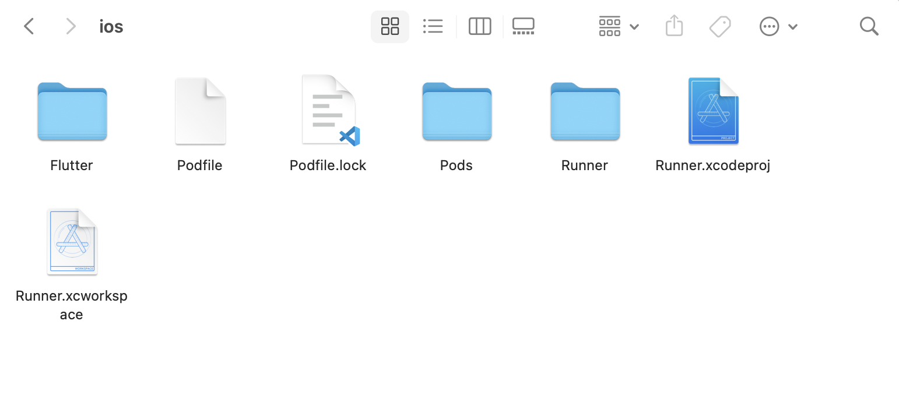

Build the Customer App for iOS
To build the customer app for iOS, we need to follow the next steps. It is to mention that, to build the app for iOS, you must need a Mac PC running at least Mac OS Ventura running XCode 13 or higher.
- Repeat the step 1 and 2 from building the app for Android described in the previous section, i,e run this 2 commands in the terminal within the project directory.
flutter clean
flutter pub get
- Open the project folder in finder and you’ll see an iOS folder there. Open that folder and it should look like the following image.

- Double-click on
Runner.xcworkspacefile and it opens up the project in XCode. - Now, let’s go to our browser to the Firebase Console and open our firebase app. Now we need to go to the project settings like the Android app process in the previous section.
Now click on “Add App” button and fill up the information as requested.

- In the above image, we need to put the apple bundle ID. We’ll find that in XCode in the General tab, the field we are looking for is
Bundle Identifierlike the image. Copy that and paste into the form at step 4. In the app nickname, add the app name you have set. And download the config file called GoogleService-info.plist and add that file to the iOS project. - To do that, right click on Runner in XCode and select
Add files to Runnerand select theGoogleService-info.plistdownloaded previously. Make sure, this file andinfo.plistfile remains in the same directory like the image below.

- Now, in the terminal, run the following command.
cd iOS
pod install
Make sure you have cocoapods installed in your Mac. If you don’t have cocoapods, you can use the following link to install that. Cocoapods Installation
- let’s run the app in XCode. App should build and run in the simulator.